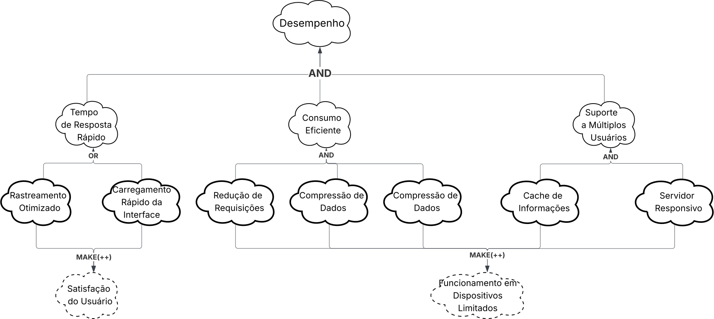
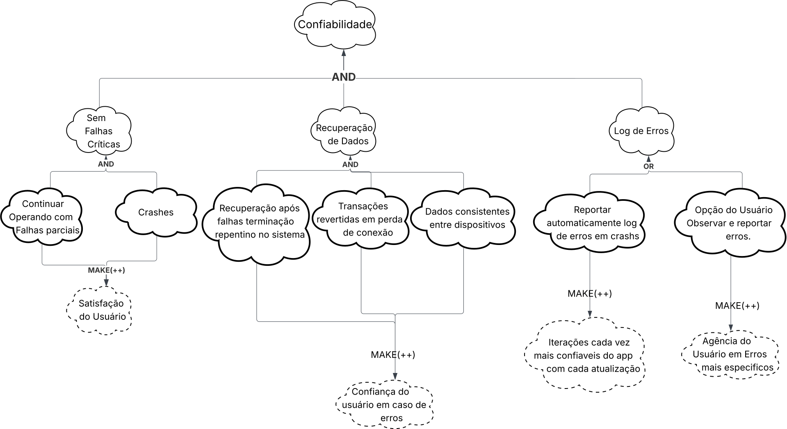

Introdução
O NFR Framework (Framework de Requisitos Não Funcionais) é uma abordagem utilizada para representar e analisar RNF. Segundo Reinaldo Antônio 1, seu objetivo é auxiliar desenvolvedores a implementar soluções personalizadas. Essa abordagem considera as características específicas do sistema — como requisitos funcionais, não-funcionais, prioridades e carga de trabalho — para determinar as alternativas de desenvolvimento mais adequadas (CHUNG et al., 2000).
Print da Referência

Figura 01 – NFR Framework.
Tabela de Contribuições
Softgoal Interdependency Graph
Segundo Reinaldo Antônio 1 o "Softgoal Interdependency Graph" (SIG) é um gráfico que registra as análises do desenvolvedor sobre os softgoals (objetivos não-funcionais) e mostra como eles dependem uns dos outros. Essencialmente, os SIGs armazenam todo o histórico das decisões de desenvolvimento e a lógica do projeto de forma visual e resumida.
Conforme Silva 1, após a construção de uma taxonomia de Requisitos Não-Funcionais, é iniciada a criação de um Catálogo de RNFs, organizando todos os requisitos encontrados com suas definições, atributos, restrições e exemplos. Nesta etapa é realizada a construção de um grafo de Interdependência de Softgoal - Softgoal Interdependency Graph (SIG) com os Requisitos Não-Funcionais, adotando a notação do NFR Framework proposto por Chung et al. (2000). Além disso, para a documentação detalhada dos requisitos, adota-se o Cartão de Especificação baseado no cartão (snowcard) do processo Volere (Robertson; Robertson, 2012), que permite a escrita de exemplos do catálogo em um contexto real do sistema. Este cartão foi utilizado por se adequar bem à abordagem de análise de requisitos não-funcionais.
Cartão de Especificação de Requisitos
O Cartão de Especificação de Requisitos segue o padrão utilizado no NFR Framework para documentação detalhada de cada requisito não-funcional. Este cartão, baseado no processo Volere, estrutura-se com os seguintes campos:
| Campo | Descrição |
|---|---|
| Nr Requisito | Um número sequencial para identificar o requisito |
| Classificação | Classificação do tipo de requisito |
| Descrição | Declaração única do significado do requisito |
| Justificativa | Justificativa sobre a criação do requisito |
| Origem | Origem do requisito (stakeholder, norma técnica, etc.) |
| Critério de Ajuste | Métrica do requisito que possa ser testada e que deve ser satisfeita |
| Dependências | Requisitos relacionados a este |
| Prioridade | Um número usado para decidir a importância relativa deste requisito entre os outros RNFs (varia de 1 a 10) |
| Conflitos | Requisitos conflitantes com este |
| Histórico | Data de criação e de modificações |

Tipos de Softgoal
Existem três tipos de softgoals: Softgoals NFR, Softgoals de Operacionalização e Softgoals de Afirmação. Estes são descritos a seguir:
-
Softgoals NFR: representam os Requisitos Não Funcionais e podem estar interrelacionados, organizados em catálogos e apresentados de forma hierárquica no desenvolvimento do projeto (CHUNG et al., 2000).
-
Softgoals de Operacionalização: representam soluções de implementação para satisfazer softgoals NFR ou outros softgoals de operacionalização. Essas soluções incluem operações, processos, representações de dados e restrições no sistema alvo (CHUNG et al., 2000).
-
Softgoals de Afirmação: permitem que características do domínio (como prioridades e carga de trabalho) sejam consideradas e refletidas nas decisões de projeto, servindo como justificativas para apoiar ou negar escolhas (CHUNG et al., 2000).

Figura 02 – Tipos de Softgoal.
Tipos de Decomposições
As decomposições refinam softgoals para obter outros mais especializados, auxiliando na construção do projeto. Os quatro tipos principais são:
- Decomposição de Softgoal NFR: subdivide um softgoal em outros mais específicos.
- Decomposição de Operacionalização: refina soluções de implementação.
- Decomposição de Afirmação (Claims): detalha justificativas específicas de projeto.
- Priorização: refina um softgoal em outro do mesmo tipo, mas com prioridade associada.

Figura 03 – Tipos de Decomposição.
Contribuições
O NFR Framework permite diversos tipos de contribuições que descrevem como a satisfação (ou não) de um softgoal descendente afeta a satisfação de um softgoal ascendente:
- AND: todos os descendentes devem ser satisfeitos.
- OR: basta um descendente satisfeito.
- MAKE (++): contribuição fortemente positiva.
- BREAK (--): contribuição fortemente negativa.
- HELP (+): contribuição parcialmente positiva.
- HURT (-): contribuição parcialmente negativa.
- UNKNOWN (?): efeito desconhecido.
- EQUALS: relação de equivalência entre softgoals.
- SOME: sinal conhecido, mas extensão incerta.

Figura 04 – Exemplos de Contribuições “AND” e “OR”.

Figura 05 – Exemplos de Contribuições “MAKE”, “BREAK”, “HELP” e “HURT”.
SIG Usabilidade
Autoria: Fernanda Vaz, 2025.
Os softgoals de usabilidade foram extraídos dos Requisitos de usabilidade da Especificação Suplementar. O diagrama completo deste SIG pode ser visualizado na Figura 06.
Figura 06 – Diagrama SIG Usabilidade.
Cartão de Especificação 01 — Facilidade de Aprendizagem
| Campo | Descrição |
|---|---|
| Nr Requisito | RU01 / RNF01 |
| Classificação | Requisito Não-Funcional de Usabilidade — Facilidade de Aprendizagem |
| Descrição | Cidadãos devem conseguir utilizar funcionalidades básicas sem treinamento prévio. |
| Justificativa | Permite acesso imediato às informações de transporte para usuários com diferentes níveis de alfabetização digital. |
| Origem | Entrevistas com usuários finais; Análise de usabilidade. |
| Critério de Ajuste | 90% dos novos usuários completam 3 tarefas básicas em até 5 minutos sem assistência. |
| Dependências | Nenhum |
| Prioridade | 10 |
| Conflitos | Nenhum |
| Histórico | Criado em 21/10/2025 — Autor: Fernanda Vaz |
Cartão de Especificação 02 — Eficiência e Precisão
| Campo | Descrição |
|---|---|
| Nr Requisito | RU02 / RNF02 |
| Classificação | Requisito Não-Funcional de Usabilidade — Eficiência e Precisão |
| Descrição | O sistema deve oferecer resultados precisos para o usuário. |
| Justificativa | Garantir confiança no planejamento dos deslocamentos, evitando atrasos causados por dados incorretos. |
| Origem | Análise de reclamações dos usuários. |
| Critério de Ajuste | Precisão ≥ 95%; erro de horário ≤ 3 min; reclamações < 2%. |
| Dependências | RNF-Desempenho, RNF-Integração |
| Prioridade | 10 |
| Conflitos | Nenhum |
| Histórico | Criado em 21/10/2025 — Autor: Fernanda Vaz |
Cartão de Especificação 03 — Memorabilidade
| Campo | Descrição |
|---|---|
| Nr Requisito | RU03 / RNF03 |
| Classificação | Requisito Não-Funcional de Usabilidade — Memorabilidade |
| Descrição | Interface deve ser facilmente memorável para passageiros ocasionais. |
| Justificativa | Usuários esporádicos devem conseguir reutilizar o sistema sem reaprendizagem. |
| Origem | Entrevistas com usuários. |
| Critério de Ajuste | 85% dos usuários retornando após 30 dias completam tarefas sem ajuda; tempo de reaprendizagem < 2 min. |
| Dependências | Nenhum |
| Prioridade | 8 |
| Conflitos | Nenhum |
| Histórico | Criado em 21/10/2025 — Autor: Fernanda Vaz |
Cartão de Especificação 04 — Satisfação do Usuário
| Campo | Descrição |
|---|---|
| Nr Requisito | RU04 / RNF04 |
| Classificação | Requisito Não-Funcional de Usabilidade — Satisfação do Usuário |
| Descrição | A interface deve ser agradável e satisfatória de usar. |
| Justificativa | Melhora a percepção do transporte público e aumenta a adesão ao sistema. |
| Origem | Análise de documentos. |
| Critério de Ajuste | SUS ≥ 80; avaliação ≥ 4.5 estrelas; satisfação ≥ 85%. |
| Dependências | Nenhum |
| Prioridade | 8 |
| Conflitos | Nenhum |
| Histórico | Criado em 21/10/2025 — Autor: Fernanda Vaz |
Cartão de Especificação 05 — Acessibilidade
| Campo | Descrição |
|---|---|
| Nr Requisito | RU05 / RNF05 |
| Classificação | Requisito Não-Funcional de Usabilidade — Acessibilidade |
| Descrição | Suporte a leitores de tela e contraste conforme WCAG 2.1 AA. |
| Justificativa | Atende a requisitos legais e garante inclusão digital. |
| Origem | Entrevistas com usuários PCD; WCAG. |
| Critério de Ajuste | 100% conformidade WCAG 2.1 AA; contraste ≥ 4.5:1; sucesso ≥ 90% com usuários PCD. |
| Dependências | Nenhum |
| Prioridade | 10 |
| Conflitos | Nenhum |
| Histórico | Criado em 21/10/2025 — Autor: Fernanda Vaz |
Cartão de Especificação 06 — Feedback e Comunicação
| Campo | Descrição |
|---|---|
| Nr Requisito | RU06 / RNF06 |
| Classificação | Requisito Não-Funcional de Usabilidade — Feedback e Comunicação |
| Descrição | Mensagens de erro e confirmação devem ser claras e objetivas. |
| Justificativa | Ajuda na correção rápida de erros, reduz frustração e aumenta confiança. |
| Origem | Análise de documentos. |
| Critério de Ajuste | 95% das mensagens compreendidas sem explicação; leitura até 8º ano; resolução de erros < 30s. |
| Dependências | Nenhum |
| Prioridade | 9 |
| Conflitos | Nenhum |
| Histórico | Criado em 21/10/2025 — Autor: Fernanda Vaz |
Cartão de Especificação 07 — Consistência
| Campo | Descrição |
|---|---|
| Nr Requisito | RU07 / RNF07 |
| Classificação | Requisito Não-Funcional de Usabilidade — Consistência |
| Descrição | Padrões visuais e de interação consistentes em todo o aplicativo. |
| Justificativa | Reduz carga cognitiva e facilita aprendizado. |
| Origem | Entrevistas. |
| Critério de Ajuste | 100% conformidade com Design System; score ≥ 95% em auditoria de consistência. |
| Dependências | Nenhum |
| Prioridade | 9 |
| Conflitos | Nenhum |
| Histórico | Criado em 21/10/2025 — Autor: Fernanda Vaz |
Cartão de Especificação 08 — Personalização
| Campo | Descrição |
|---|---|
| Nr Requisito | RU08 / RNF08 |
| Classificação | Requisito Não-Funcional de Usabilidade — Personalização |
| Descrição | Permitir ajustes de preferências visuais (tema, fonte, notificações). |
| Justificativa | Aumenta satisfação e acessibilidade do sistema. |
| Origem | Feedback dos usuários na Play Store. |
| Critério de Ajuste | Tema claro/escuro; 3 tamanhos de fonte; controle de notificações; persistência 100%. |
| Dependências | Nenhum |
| Prioridade | 8 |
| Conflitos | Pode conflitar com RU07 se personalização excessiva reduzir consistência. |
| Histórico | Criado em 21/10/2025 — Autor: Fernanda Vaz |
RU09 - Adaptabilidade e Acessibilidade
| Campo | Descrição |
|---|---|
| Nr Requisito | RU09 |
| Classificação | Requisito Não-Funcional de Usabilidade (Acessibilidade) |
| Descrição | A interface deve ser adaptável para diferentes tipos de usuário (como usuários com deficiência visual, auditiva ou motora). |
| Justificativa | Garantir a inclusão e permitir que todos os cidadãos, independentemente de suas habilidades, possam utilizar o aplicativo com autonomia. |
| Origem | Elicitação de Requisitos: Diretrizes de Acessibilidade (WCAG 2.1), Análise de Documentos. |
| Critério de Ajuste | - Conformidade com o nível AA da WCAG 2.1. - Compatibilidade total com leitores de tela (VoiceOver e TalkBack). - Contraste mínimo de 4.5:1 para textos e 3:1 para componentes de interface. - Áreas de toque com tamanho mínimo de 44x44 pixels. |
| Dependências | SIG-U03, OP-U03, OP-U04 |
| Prioridade | 10 |
| Conflitos | Pode conflitar com requisitos de design (estética) se não for bem planejado. |
| Histórico | Criado em 21/10/2025 — Autor: João Ramos |
SIG Desempenho
Autoria: Gabriel Maciel, 2025.
Os softgoals de desempenho foram extraídos dos Requisitos de Desempenho (RD01-RD04) definidos na Especificação Suplementar. O diagrama completo deste SIG pode ser visualizado na Figura 07.

Softgoals NFR
A Tabela 05 lista os softgoals NFR principais.
| ID | Softgoal | Descrição |
|---|---|---|
| SIG-D01 | Desempenho | Garantir tempo de resposta e eficiência. |
| SIG-D02 | Tempo de Resposta Rápido | Operações concluídas em tempo aceitável. |
| SIG-D03 | Consumo Eficiente | Reduzir uso de bateria e dados móveis. |
| SIG-D04 | Múltiplos Usuários | Suportar vários usuários simultaneamente. |
Softgoals de Operacionalização
Tabela 06 - Tabela de Especificação de Softgoals de Operacionalização do SIG Desempenho
| ID | Operacionalização | Softgoal Pai | Descrição |
|---|---|---|---|
| OP-D01 | Rastreamento Otimizado | SIG-D02 | Implementar rastreamento de veículos com latência máxima de 20 segundos. |
| OP-D02 | Carregamento Rápido da Interface | SIG-D02 | Interface principal carrega em menos de 3 segundos. |
| OP-D03 | Redução de Requisições | SIG-D03 | Minimizar requisições de rede desnecessárias através de cache e sincronização eficiente. |
| OP-D04 | Compressão de Dados | SIG-D03 | Aplicar compressão em dados transmitidos para reduzir consumo de dados móveis. |
| OP-D05 | Tamanho Compacto da Aplicação | SIG-D03 | Manter o tamanho do aplicativo reduzido para economizar espaço de armazenamento em dispositivos com recursos limitados. |
| OP-D06 | Cache de Informações | SIG-D04 | Armazenar dados de linhas, paradas e horários localmente para reduzir carga de requisições ao servidor. |
| OP-D07 | Servidor Responsivo | SIG-D04 | Manter infraestrutura de servidor estável e responsiva para processar múltiplas requisições simultâneas de rastreamento e consulta. |
Softgoals de Afirmação
A Tabela 07 especifica os softgoals de afirmação.
| ID | Afirmação | Softgoal Pai | Descrição |
|---|---|---|---|
| AF-D01 | Satisfação do Usuário | SIG-D02 | Usuários satisfeitos com a velocidade da aplicação. |
| AF-D02 | Funcionamento em Dispositivos Limitados | SIG-D03, SIG-D04 | Sistema funciona bem em smartphones com recursos reduzidos. |
Rastreabilidade
| Softgoal | Requisito Origem | Descendentes |
|---|---|---|
| SIG-D01 | RD01, RD02, RD03, RD04 | SIG-D02, SIG-D03, SIG-D04 |
| SIG-D02 | RD01, RD02 | OP-D01, OP-D02, AF-D01 |
| SIG-D03 | RD03 | OP-D03, OP-D04, OP-D05, AF-D02 |
| SIG-D04 | RD04 | OP-D06, OP-D07, AF-D02 |
Cartão de Especificação de Requisitos Não-Funcionais do SIG Desempenho
RD01 - Rastreamento de Veículos em Tempo Real
| Campo | Descrição |
|---|---|
| Nr Requisito | RD01 / RNF03 |
| Classificação | Requisito Não-Funcional de Desempenho |
| Descrição | O sistema deve rastrear a localização de ônibus em tempo real com latência máxima de 20 segundos entre atualizações. |
| Justificativa | Essencial para que passageiros recebam informações precisas sobre a proximidade de ônibus, permitindo melhor planejamento de trajetos. |
| Origem | Elicitação de Requisitos: Entrevista (ENT09, ENT13) |
| Critério de Ajuste | Latência máxima de 20 segundos; precisão de localização de ±50 metros. |
| Dependências | RF35, RD04 |
| Prioridade | 9 |
| Conflitos | Nenhum |
| Histórico | Criado em 21/10/2025 — Autor: Gabriel Maciel |
RD02 - Tempo de Carregamento Rápido
| Campo | Descrição |
|---|---|
| Nr Requisito | RD02 / RNF06 |
| Classificação | Requisito Não-Funcional de Desempenho |
| Descrição | A interface mobile da aplicação deve ser carregada em no máximo 3 segundos em conexões 4G. |
| Justificativa | Melhor experiência do usuário e redução de abandono de uso do aplicativo devido a lentidão. |
| Origem | Elicitação de Requisitos: Entrevista (ENT17) |
| Critério de Ajuste | Tempo de carregamento ≤ 3 segundos; testado em dispositivos com conexão 3G/4G. |
| Dependências | OP-D02, RD03 |
| Prioridade | 8 |
| Conflitos | Nenhum |
| Histórico | Criado em 21/10/2025 — Autor: Gabriel Maciel |
RD03 - Consumo Eficiente de Bateria e Dados
| Campo | Descrição |
|---|---|
| Nr Requisito | RD03 / RNF10 |
| Classificação | Requisito Não-Funcional de Desempenho |
| Descrição | O aplicativo deve consumir no máximo 5% da bateria por hora em uso ativo e ter tamanho máximo de 50MB, permitindo acesso a usuários com dispositivos antigos ou com planos de dados limitados. |
| Justificativa | Permitir acesso a usuários com dispositivos antigos ou com planos de dados limitados, expandindo o alcance do sistema e melhorando a experiência em redes com conectividade reduzida. |
| Origem | Elicitação de Requisitos: Entrevista (ENT17) |
| Critério de Ajuste | Consumo de bateria ≤ 5% por hora em uso ativo; tamanho do app ≤ 50MB. |
| Dependências | OP-D03, OP-D04, OP-D05 |
| Prioridade | 7 |
| Conflitos | Nenhum |
| Histórico | Criado em 21/10/2025 — Autor: Gabriel Maciel |
RD04 - Suporte a Múltiplos Usuários Simultâneos
| Campo | Descrição |
|---|---|
| Nr Requisito | RD04 / RNF14 |
| Classificação | Requisito Não-Funcional de Desempenho |
| Descrição | Os dados de localização de ônibus devem ser sincronizados com o servidor em tempo real, com no máximo 15 segundos de latência. |
| Justificativa | Garantir que o sistema mantenha a qualidade de serviço mesmo durante picos de uso, como horários de pico de deslocamento. |
| Origem | Elicitação de Requisitos: Brainstorm (BRS15) |
| Critério de Ajuste | Suportar ≥ 10.000 usuários simultâneos; tempo de resposta ≤ 2 segundos mesmo em carga máxima. |
| Dependências | OP-D06, OP-D07, RD01, RD02 |
| Prioridade | 9 |
| Conflitos | Nenhum |
| Histórico | Criado em 21/10/2025 — Autor: Gabriel Maciel |
SIG Portabilidade/Compatibilidade
Autoria: Cauã Nicolas, 2025.

Cartão de Especificação de Requisitos Não-Funcionais do SIG Portabilidade
RS01 - Funcionalidade e Responsividade em Navegadores Móveis
| Campo | Descrição |
|---|---|
| Nr Requisito | RS01 |
| Classificação | Requisito do Sistema (Funcionalidade / Usabilidade) |
| Descrição | A aplicação deve ser funcional e responsiva em navegadores web de dispositivos móveis (celulares). |
| Justificativa | Garantir acesso amplo sem necessidade de instalação e assegurar boa experiência em dispositivos móveis. |
| Origem | Documento de requisitos / Entrevistas (RFxx) |
| Critério de Ajuste | - Layout adaptativo em telas de 320px a 1080px. - Elementos interativos acessíveis e tocáveis conforme WCAG; testes em 3 navegadores móveis principais. |
| Dependências | Depende de práticas de CSS responsivo, frameworks front-end e testes de usabilidade. |
| Prioridade | 9 |
| Conflitos | Pode conflitar com requisitos de desempenho se renderização for pesada. |
| Histórico | Criado em 21/10/2025 — Autor: Cauã Nicolas |
RS02 - Funcionamento Offline
| Campo | Descrição |
|---|---|
| Nr Requisito | RS02 |
| Classificação | Requisito do Sistema (Disponibilidade / Operacionalidade) |
| Descrição | A aplicação deve funcionar mesmo sem conexão de internet para consulta a rotas salvas e horários. |
| Justificativa | Usuários em áreas com conectividade limitada precisam acessar informações básicas sem conexão. |
| Origem | Documento de requisitos / Entrevistas (RFxx) |
| Critério de Ajuste | - Dados essenciais (rotas e horários salvos) acessíveis offline. - Tempo de sincronização de dados ao reconectar ≤ 10s para atualizações incrementais. |
| Dependências | Implementação de cache local (IndexedDB/LocalStorage) e sincronização de dados. |
| Prioridade | 9 |
| Conflitos | Armazenamento local pode aumentar uso de espaço no dispositivo; segurança de dados offline. |
| Histórico | Criado em 21/10/2025 — Autor: Cauã Nicolas |
RS03 - Configuração de Notificações (Som e Vibração)
| Campo | Descrição |
|---|---|
| Nr Requisito | RS03 |
| Classificação | Requisito do Sistema (Notificações / Usabilidade) |
| Descrição | O sistema de notificação com som e vibração deve estar devidamente configurável pelo usuário. |
| Justificativa | Permitir ao usuário adaptar notificações conforme preferências e necessidades (p.ex., modo silencioso). |
| Origem | Documento de requisitos / Entrevistas (RFxx) |
| Critério de Ajuste | - Usuário pode ativar/desativar som e vibração independentemente. - Preferências persistidas entre sessões. |
| Dependências | API de notificações do navegador/dispositivo; armazenamento de preferências do usuário. |
| Prioridade | 8 |
| Conflitos | Pode conflitar com políticas de plataforma sobre uso de som/vibração em segundo plano. |
| Histórico | Criado em 21/10/2025 — Autor: Cauã Nicolas |
RS04 - Compatibilidade com APIs Externas
| Campo | Descrição |
|---|---|
| Nr Requisito | RS04 |
| Classificação | Requisito do Sistema (Integração) |
| Descrição | O sistema deve ser compatível com APIs externas de transporte público e serviços de geolocalização. |
| Justificativa | Integração com provedores externos é essencial para dados em tempo real e funcionalidade correta do app. |
| Origem | Documento de requisitos / Análise de APIs (RFxx) |
| Critério de Ajuste | - Suporte a formatos JSON/GeoJSON e autenticação via API keys/OAuth. - Testes de integração automatizados com provedores principais. |
| Dependências | Contratos/SLAs com provedores (BRB Mobilidade, APIs de mapas). |
| Prioridade | 9 |
| Conflitos | Dependência externa pode afetar disponibilidade; necessidade de adaptação a mudanças de API. |
| Histórico | Criado em 21/10/2025 — Autor: Cauã Nicolas |
RS05 - Ajuste Automático de Layout
| Campo | Descrição |
|---|---|
| Nr Requisito | RS05 |
| Classificação | Requisito do Sistema (Usabilidade / Compatibilidade) |
| Descrição | A interface deve ajustar automaticamente os elementos visuais para diferentes resoluções de tela, mantendo legibilidade e usabilidade. |
| Justificativa | Garantir que usuários em dispositivos diversos tenham experiência consistente e legível. |
| Origem | Documento de requisitos / Entrevistas (RFxx) |
| Critério de Ajuste | - Tipografia e espaçamento adaptativos; elementos acessíveis em dispositivos pequenos. - Pontuação mínima em testes de usabilidade de 80% para tarefas básicas. |
| Dependências | Frameworks de UI responsiva, testes de usabilidade e guidelines WCAG. |
| Prioridade | 9 |
| Conflitos | Pode conflitar com limitações de layout em dispositivos muito pequenos; trade-offs entre detalhe e simplicidade. |
| Histórico | Criado em 21/10/2025 — Autor: Cauã Nicolas |
SIG Confiabilidade
Autoria: João Gabriel, 2025
Os softgoals de confiabilidade foram extraídos dos Requisitos de Confiabilidade (RC01-RC07) definidos na Especificação Suplementar.

Softgoals NFR
A Tabela 10 lista os softgoals NFR principais.
| ID | Softgoal | Descrição |
|---|---|---|
| SIG-C01 | Confiabilidade | Garantir operação consistente e resiliente do sistema |
| SIG-C02 | Disponibilidade | Sistema deve operar sem falhas críticas |
| SIG-C03 | Tolerância a Falhas | Sistema deve continuar operando mesmo com falhas parciais |
| SIG-C04 | Recuperabilidade | Capacidade de recuperar dados e restabelecer operação após falhas |
| SIG-C05 | Estabilidade em Rede Instável | Funcionamento adequado em condições de conectividade intermitente |
| SIG-C06 | Atomicidade | Transações completadas integralmente ou revertidas sem estados parciais |
| SIG-C07 | Monitoramento | Sistema deve detectar e reportar falhas automaticamente |
| SIG-C08 | Consistência de Dados | Dados devem permanecer consistentes entre sessões e dispositivos |
Softgoals de Operacionalização
Tabela 11 - Tabela de Especificação de Softgoals de Operacionalização do SIG Confiabilidade
| ID | Operacionalização | Softgoal Pai | Descrição |
|---|---|---|---|
| OP-C01 | Sem Falhas Críticas | SIG-C02 | Implementar tratamento robusto para evitar falhas que impeçam uso do sistema |
| OP-C02 | Continuidade com Falhas Parciais | SIG-C03 | Manter funcionalidades essenciais mesmo com falhas em serviços secundários |
| OP-C03 | Recuperação de Dados | SIG-C04 | Restaurar dados e operação após falhas do sistema |
| OP-C04 | Transações Resilientes | SIG-C05, SIG-C06 | Garantir atomicidade mesmo em condições de rede instável |
| OP-C05 | Consistência entre Dispositivos | SIG-C08 | Sincronizar dados entre diferentes sessões e dispositivos |
| OP-C06 | Reporte Automático de Logs | SIG-C07 | Detectar e registrar falhas automaticamente para análise |
| OP-C07 | Reporte Manual por Usuário | SIG-C07 | Permitir que usuários reportem erros observados manualmente |
Softgoals de Afirmação
A Tabela 12 especifica os softgoals de afirmação.
| ID | Afirmação | Softgoal Pai | Descrição |
|---|---|---|---|
| AF-C01 | Confiança do Usuário | SIG-C02, SIG-C03 | Usuários confiam no sistema para deslocamentos críticos |
| AF-C02 | Experiência Consistente | SIG-C04, SIG-C08 | Experiência uniforme independente de condições externas |
| AF-C03 | Resiliência Operacional | SIG-C05, SIG-C06 | Sistema mantém operação em cenários adversos |
Rastreabilidade
| Softgoal | Requisito Origem | Descendentes |
|---|---|---|
| SIG-C01 | RC01, RC02, RC03, RC04, RC05, RC06, RC07 | SIG-C02, SIG-C03, SIG-C04, SIG-C05, SIG-C06, SIG-C07, SIG-C08 |
| SIG-C02 | RC01 | OP-C01, AF-C01 |
| SIG-C03 | RC02 | OP-C02, AF-C01 |
| SIG-C04 | RC03 | OP-C03, AF-C02 |
| SIG-C05 | RC04 | OP-C04, AF-C03 |
| SIG-C06 | RC05 | OP-C04, AF-C03 |
| SIG-C07 | RC06 | OP-C06, OP-C07 |
| SIG-C08 | RC07 | OP-C05, AF-C02 |
Cartão de Especificação de Requisitos Não-Funcionais do SIG Confiabilidade
RC01 - Operação sem Falhas Críticas
| Campo | Descrição |
|---|---|
| Nr Requisito | RC01 / RNF16 |
| Classificação | Requisito Não-Funcional de Confiabilidade - Disponibilidade |
| Descrição | Sistema deve operar sem falhas críticas que impeçam o uso das funcionalidades principais |
| Justificativa | Garantir que usuários possam confiar no sistema para planejamento de deslocamentos essenciais |
| Origem | Elicitação de Requisitos: Especificação Suplementar - Categoria Confiabilidade |
| Critério de Ajuste | Uptime ≥ 99.5%; Zero falhas críticas em produção; MTBF ≥ 720 horas |
| Dependências | RF01, RF02, RF35 |
| Prioridade | 10 |
| Conflitos | Nenhum |
| Histórico | Criado em 21/10/2025 — Autor: João Gabriel |
RC02 - Operação com Falhas Parciais
| Campo | Descrição |
|---|---|
| Nr Requisito | RC02 / RNF17 |
| Classificação | Requisito Não-Funcional de Confiabilidade - Tolerância a Falhas |
| Descrição | O sistema deve continuar operando mesmo com falhas parciais em serviços secundários |
| Justificativa | Manter funcionalidades críticas disponíveis mesmo quando serviços auxiliares falharem |
| Origem | Elicitação de Requisitos: Especificação Suplementar - Categoria Confiabilidade |
| Critério de Ajuste | Funcionalidades principais disponíveis com ≤ 1 serviço secundário offline; Degradação graciosa implementada |
| Dependências | RF13, RF14, RF15 |
| Prioridade | 9 |
| Conflitos | Nenhum |
| Histórico | Criado em 21/10/2025 — Autor: João Gabriel |
RC03 - Recuperação de Dados
| Campo | Descrição |
|---|---|
| Nr Requisito | RC03 / RNF18 |
| Classificação | Requisito Não-Funcional de Confiabilidade - Recuperabilidade |
| Descrição | Capacidade de recuperar dados e restabelecer operação após falhas |
| Justificativa | Proteger dados do usuário contra perda e garantir rápida recuperação do sistema |
| Origem | Elicitação de Requisitos: Especificação Suplementar - Categoria Confiabilidade |
| Critério de Ajuste | RTO ≤ 1 hora; RPO ≤ 15 minutos; Backup automático a cada 24 horas |
| Dependências | RF15, RF24 |
| Prioridade | 9 |
| Conflitos | Nenhum |
| Histórico | Criado em 21/10/2025 — Autor: João Gabriel |
RC04 - Funcionamento com Rede Instável
| Campo | Descrição |
|---|---|
| Nr Requisito | RC04 / RNF19 |
| Classificação | Requisito Não-Funcional de Confiabilidade - Estabilidade |
| Descrição | Funcionamento adequado em condições de rede instável com conectividade intermitente |
| Justificativa | Garantir usabilidade em áreas com cobertura irregular de internet |
| Origem | Elicitação de Requisitos: Especificação Suplementar - Categoria Confiabilidade |
| Critério de Ajuste | Funcionalidades offline disponíveis; Sincronização automática ao reconectar; Cache local de 48 horas |
| Dependências | RNF11, RF04, RF05 |
| Prioridade | 8 |
| Conflitos | Nenhum |
| Histórico | Criado em 21/10/2025 — Autor: João Gabriel |
RC05 - Atomicidade de Transações
| Campo | Descrição |
|---|---|
| Nr Requisito | RC05 / RNF20 |
| Classificação | Requisito Não-Funcional de Confiabilidade - Atomicidade |
| Descrição | Transações devem ser completadas integralmente ou revertidas sem estados parciais |
| Justificativa | Evitar situações de inconsistência financeira e dados corrompidos |
| Origem | Elicitação de Requisitos: Especificação Suplementar - Categoria Confiabilidade |
| Critério de Ajuste | 100% das transações atômicas; Rollback automático em falhas; Log de todas as operações |
| Dependências | RF13, RF14 |
| Prioridade | 10 |
| Conflitos | Nenhum |
| Histórico | Criado em 21/10/2025 — Autor: João Gabriel |
RC06 - Detecção e Reporte de Falhas
| Campo | Descrição |
|---|---|
| Nr Requisito | RC06 / RNF21 |
| Classificação | Requisito Não-Funcional de Confiabilidade - Monitoramento |
| Descrição | Sistema deve detectar e reportar falhas automaticamente em logs |
| Justificativa | Permitir identificação e correção proativa de problemas |
| Origem | Elicitação de Requisitos: Especificação Suplementar - Categoria Confiabilidade |
| Critério de Ajuste | Logging centralizado; Alertas automáticos para falhas críticas; Dashboard de monitoramento |
| Dependências | Todos os requisitos funcionais |
| Prioridade | 7 |
| Conflitos | Nenhum |
| Histórico | Criado em 21/10/2025 — Autor: João Gabriel |
RC07 - Consistência de Dados
| Campo | Descrição |
|---|---|
| Nr Requisito | RC07 / RNF22 |
| Classificação | Requisito Não-Funcional de Confiabilidade - Consistência |
| Descrição | Dados devem permanecer consistentes entre diferentes sessões e dispositivos |
| Justificativa | Garantir experiência uniforme independente do dispositivo de acesso |
| Origem | Elicitação de Requisitos: Especificação Suplementar - Categoria Confiabilidade |
| Critério de Ajuste | Sincronização em tempo real; Resolução de conflitos; Consistência eventual ≤ 5 segundos |
| Dependências | RF15, RF24, RF37 |
| Prioridade | 8 |
| Conflitos | Nenhum |
| Histórico | Criado em 21/10/2025 — Autor: João Gabriel |
Validação (João Ramos)
Referência bibliográfica
1. SILVA, Reinaldo Antônio da. NFR4ES: um Catálogo de Requisitos Não-Funcionais para Sistemas Embarcados. Recife: Universidade Federal de Pernambuco, 2019.
Bibliografia
SANTOS, Fernanda Vaz Duarte dos. Diagrama NFR Framework [diagrama]. Lucidchart, 2025.
Disponível em: https://lucid.app/lucidchart/929a11a2-17f7-4526-93f0-3c97ddc4d236.
Acesso em: 19 out. 2025.
Histórico de Versões
| Versão | Data | Descrição | Autor(es) | Revisor(es) |
|---|---|---|---|---|
| 1.0 | 18/10 | Adição do SIG Usabilidade e introdução | Fernanda Vaz | Gabriel Maciel |
| 1.1 | 20/10 | Adição do SIG Desempenho | Gabriel Maciel | Cauã Nicolas |
| 1.2 | 20/10 | Adição do SIG Portabilidade | Cauã Nicolas | Gabriel Maciel |
| 1.3 | 20/10 | Adição do SIG Acessibilidade | Fernanda vaz | Gabriel Maciel |
| 1.4 | 21/10 | Adição de Cartões de Especificação dos RNFs do SIG Desempenho | Gabriel Maciel | Cauã Nicolas |
| 1.5 | 21/10 | Adição de Cartões de Especificação dos RNFs do SIG Portabilidade | Cauã Nicolas | Gabriel Maciel |
| 1.6 | 21/10 | Adição de Cartões de Especificação dos RNFs do SIG Usabilidade | João Ramos | Gabriel Maciel |
| 2.0 | 25/10 | Adição de Tabela de Contribuições | Gabriel Maciel |
Agradecimentos
Agradecemos o suporte da ferramenta de Inteligência Artificial Generativa Google Gemini no desenvolvimento deste trabalho.
Em conformidade com o Código de Conduta da Sociedade Brasileira de Computação (SBC), declaramos que a ferramenta foi utilizada como auxílio na revisão gramatical e estilística, bem como na formatação e estruturação das tabelas e figuras.
Os autores assumem total responsabilidade pelo conteúdo e originalidade do trabalho.
A ferramenta não figura como autora desta publicação.